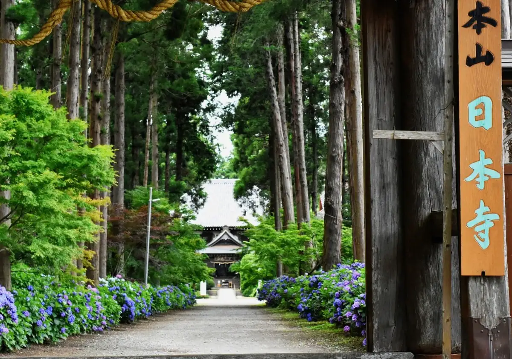
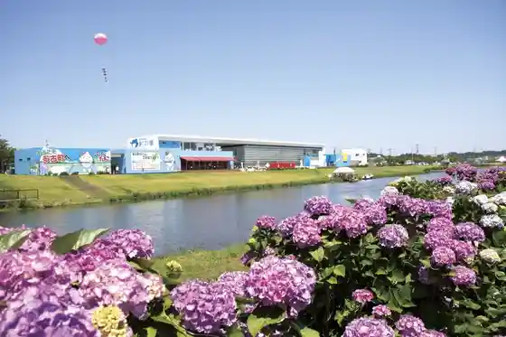
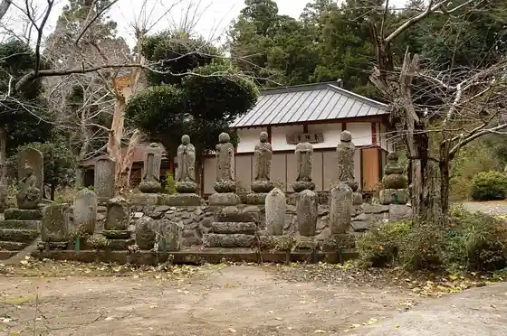

Tako
Tako · Chiba
Tako
Highlighted on the Chiba map.

Sights
Roadside Station Tako Ajisai Kan

TACO GLAMP
Kujukuri Farm Tamago Ya San Cocco
Seito Yama Nippon Tera
Dobashi Santo Zendera

Tako Miryoku Hasshin Koryu Kan (Takorabo)
Myo In Yama Myoko Tera
Shibuya Kasuke Kyutaku Seimon
Kiuchi Ie House